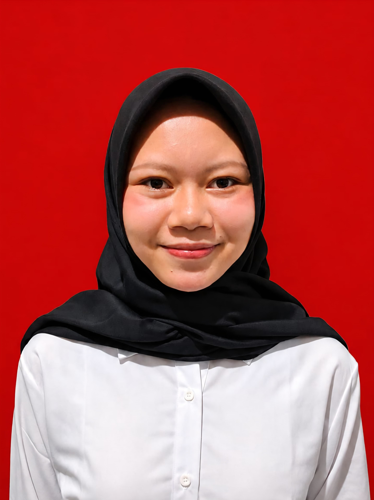

HALO, SELAMAT DATANG!
Saya adalah seorang mahasiswi yang memiliki semangat untuk terus belajar, mengembangkan kemampuan, serta mendapatkan pengalaman baru.
Kenali Saya
Perkenalkan, nama saya Zalfaa Nidaa Naafilah. Saya merupakan seorang mahasiswi jurusan sistem informasi yang tertarik pada dunia pendidikan, teknologi, dan pengembangan diri.
Saya senang mempelajari hal-hal baru, mampu bekerja sama dalam tim, serta berusaha menyelesaikan setiap tanggung jawab dengan baik.
Nama: Zalfaa Nidaa Naafilah
Tempat, Tanggal Lahir: Kota, Tanggal
Alamat: Graha Subang Kencana 2 Blok C 40
Email: nafilahnida88@gmail.com
Status: Mahasiswa
Program Studi Sistem Informasi
Jurusan IPA
Pendidikan Menengah Pertama
Anggota Divisi Kesenian, Prestasi Akademik, dan Non-Akademik Merancang dan mengoordinasikan penyelenggaraan Pentas Seni (Pensi) tahunan dan pekan olahraga antar-kelas (Classmeeting) yang diikuti oleh lebih dari 400 siswa. Mengelola jadwal pelatihan, penyediaan fasilitas latihan, dan pendampingan teknis bagi tim ekstrakurikuler seni dan akademik menjelang perlombaan.
Melakukan pengawasan teknis selama acara berlangsung untuk mengantisipasi kendala peralatan secara cepat dan memastikan seluruh barang kembali dalam kondisi lengkap (0 kehilangan). Merespons kebutuhan mendadak dari divisi acara dan pengisi panggung dengan sigap selama acara berlangsung hingga selesai.
Menjadi anggota PASKIBRA SMA PGRI 1 Subang selama 3 tahun (2024-2026)
Terima kasih sudah mengunjungi portofolio saya. Jangan ragu untuk menghubungi saya melalui informasi berikut.
Email: nafilahnida88@gmail.com
Instagram: @fazlfnafila
WhatsApp: 08976825397